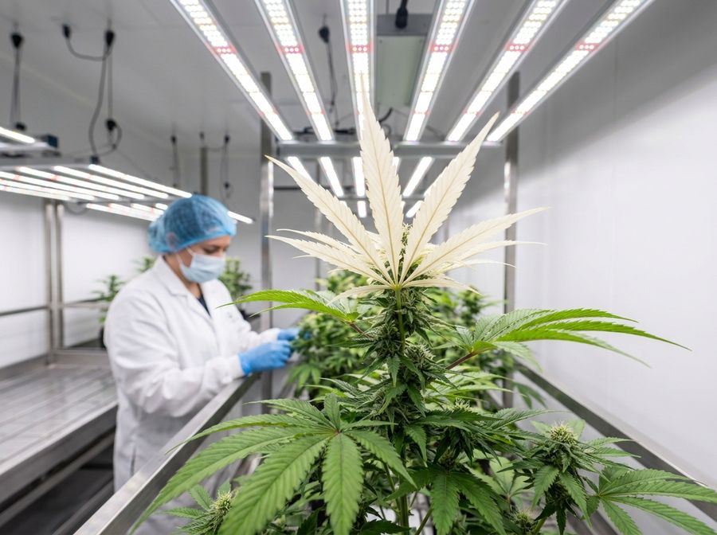

Light acclimation: raise PPFD in steps so plants don't bleach
Light is a curve, not a switch. Raise PPFD in steps the plant can keep up with, and match CO2 to set how high you can go. Updated with the latest research (2024-2026) on high-light quality gains, far-red, and UV.
Light is a ramp, not a switch
Two beginner mistakes cause most light damage in a grow room: blasting weak, freshly-rooted clones with full-power light, and the opposite, under-lighting flowering plants out of fear of burning them[1].
Both have the same fix. Light intensity is not an on/off control. It is something the plant adapts to over weeks. As light rises gradually, the plant physically rebuilds its light-harvesting machinery to keep pace. Push the intensity up too fast, or push it too high without enough CO2, and the excess energy stops growing the plant and starts damaging it: pale, bleached tips and stalled growth.
The light a plant can take ranges enormously across a full cycle: roughly 80 µmol/m²/s for a tender clone up to around 1500 µmol/m²/s for a mature, CO2-supplemented flowering canopy[3]. This guide covers how plants acclimate, a week-by-week intensity schedule, how high you can safely go, and how to read the warning signs.
Anyone who has cooked a clone or been afraid to turn the lights up. Pairs with the crop-steering and plant-state dashboard papers.
The words you need before we start
These five terms carry the whole guide. Read them once and the rest reads easily. Each one comes back in context.

What the plant builds as it adapts
The plant invests in hardware to match rising light. Week over week it builds more chloroplasts (the tiny green factories that catch light), thicker protective leaf surfaces, and a higher density of the enzymes that turn captured energy into sugar[8]. Each new increment of light then has machinery ready and waiting to use it.
A plant built only for moderate light cannot absorb a sudden flood of photons. The light-harvesting side keeps catching energy, but there is nowhere for it to go. The surplus is converted into reactive oxygen species, unstable molecules that damage the leaf from the inside[5]. In effect the leaf attacks itself: you see bleached tips and growth grinds to a halt[6].
This is the whole case for incremental ramping. Add light in small steps the plant can keep pace with, and capacity scales alongside intensity, so every photon becomes sugar instead of damage[7].
Pale, white-tipped upper leaves are not ‘light hunger’. They are the leaf burning itself with energy it can't use. The cure is less light or more capacity, never more light.
Light is the accelerator, CO2 is the fuel
Photosynthesis has two halves. The light reactions capture energy from photons. The Calvin cycle then uses CO2 from the air to turn that captured energy into sugar. Both halves have to scale together[2].
Raise light but leave CO2 low and you trip the same trap as ramping too fast. The light reactions keep capturing energy that the Calvin cycle has no CO2 to fix onto anything. The energy backs up and causes the exact same oxidative bleaching as ramping too fast. You cannot tell the two mistakes apart by looking at the leaf[6].
High-light setups demand matched CO2. On ambient air (around 400–600 ppm CO2), pushing much above ~850 µmol/m²/s mostly burns electricity instead of making sugar[2]. To run 1200 µmol/m²/s you need roughly 1000–1200 ppm CO2; for 1500, around 1200–1500 ppm[1].
Light is the accelerator, CO2 is the fuel. Flooring the pedal with an empty tank doesn't go faster. It stalls and overheats.
A week-by-week PPFD ramp by growth stage
A representative indoor cycle runs about 14 weeks (~98 days) and ramps light stage by stage[4]. Clones start soft, veg climbs steadily, and after the flip to flower the plant rebuilds toward its peak before tapering at the end.
The 12/12 flip cuts total daily light (DLI) by about 28% even at the same PPFD, simply because the lights are on fewer hours[1]. Plan for that dip rather than panicking and over-cranking the dimmer.
| Stage | Photoperiod | PPFD range (µmol/m²/s) | Notes |
|---|---|---|---|
| Clone | 18/6 | 80 → 300 | Soft and gentle while roots and machinery form |
| Vegetative bulking | 18/6 | 300 → 650 | Ramp roughly +100 per week |
| Flower acclimation | 12/12 | 600 → 950 | Rebuild after the flip's DLI dip |
| Peak flower | 12/12 | 950 / 1200 / 1500 | Hold at your control tier's ceiling |
| Maturation | 12/12 | 950 → 850 | Taper slightly as the plant ripens |
The DLI drop at 12/12 is normal and expected. Let early flower re-acclimate from ~600 back up toward 950 rather than slamming the lights to peak the day you flip.
How high you push depends on what you control
Your environment sets your safe peak PPFD, not your ambition. The number you can hold is whatever your CO2, climate and cooling actually support today. Raising the ceiling means raising the whole system, not just the dimmer.
On ambient air the honest ceiling is about 950 µmol/m²/s, with real diminishing returns above ~850 because there isn't enough CO2 to use the extra light[2]. A matched intermediate system supports 1200. The 1500 tier is expert-only and demands the full environmental stack[3].
| Tier 1, Beginner | Tier 2, Intermediate | Tier 3, Expert | |
|---|---|---|---|
| Peak PPFD | ~950 | 1200 | 1500 |
| CO2 required | 400–600 ppm (ambient) | 1000–1200 ppm | 1200–1500 ppm |
| Prerequisites | None, just don't exceed ~850 usefully | Tight VPD + CO2 supplementation | Leaf-temp control + substrate strategy + capable strain |
Running Tier-3 light on Tier-1 air is the most expensive way to bleach plants. Max out the honest ceiling you can fuel before chasing a higher one.
Hanging height and dimming: how you deliver the ramp
Two levers set canopy PPFD: the fixture's dimmer and its hanging height above the plants. Both change how much light lands on the leaves, but they don't behave the same way.
Dimming is the cleaner lever for fine, repeatable steps. It changes intensity without changing how widely the light spreads or how much radiant heat reaches the canopy. Raising or lowering the fixture also shifts the spread and the heat, so it's a coarser adjustment.
Whichever lever you use, verify the real number. Measure PPFD at the canopy with a meter, or read it off the fixture's distance chart. Don't trust a wattage or a dial position. The same fixture reads very differently at different heights. And re-check whenever the canopy grows toward the light: as plants stretch they get closer to the source, raising effective PPFD even if you changed nothing.
A plant that stretched 15 cm toward the light this week is getting noticeably more PPFD even though you touched nothing. Re-measure after every growth spurt.
Signs of too much light, and the traps that cause it
Too much light shows up as bleached or white tips on the upper canopy, the leaves closest to the source, together with stalled growth[6]. The catch: the same symptom comes from two different mistakes, and you cannot tell which from the leaf alone.
Mistake one is ramping intensity too fast. Mistake two is high light with low CO2. Both back energy up into the same oxidative damage, so they look identical[5]. Don't try to diagnose by eye. Prevent both: ramp incrementally and keep CO2 matched to your intensity.
| Symptom | Likely cause | What to do |
|---|---|---|
| Bleached / white upper-canopy tips | Ramped too fast OR high light + low CO2 | Back PPFD down a step; confirm CO2 matches your intensity |
| Bleaching despite ‘safe’ PPFD | Out-of-range leaf temp or VPD | Fix climate first: heat and dry air bleach at safe light |
| Stalled growth at high light | Capacity hasn't caught up, or CO2 limited | Hold intensity; let the plant acclimate; check CO2 |
| Pale, stretchy, sparse flower | Chronically under-lit out of fear | Raise PPFD in steps: under-lighting wastes yield too |
After one bleaching scare, growers often crank flower light far too low and leave yield on the table. Chronic under-lighting wastes a crop just as surely as bleaching wastes plants[1]. Back down one step, then climb again deliberately.
What the newest studies add
Acclimation and CO2 matching are the foundation, and they haven't changed. Recent work (2024-2026) sharpens three things: how much a high ceiling actually buys you, and two spectrum levers, far-red and UV, that get oversold.
A well-fuelled high ceiling improves quality, not just weight. A 2024 trial pushing PPFD from 600 to 1200 µmol/m²/s raised cannabinoid content by about 60% and terpenoid content by about 40%, from both a heavier inflorescence and higher concentrations, at roughly constant light-use efficiency[9]. Alongside the older result that dry flower yield rises roughly linearly with PPFD up to ~1800 µmol[1], the message is consistent: a clean ramp to a high ceiling pays in grade as well as mass — provided CO2 and climate keep pace. Without that fuel, the extra light still just bleaches (Section above).
Far-red is a dosed scalpel, with a trade-off. End-of-day far-red can shorten the photoperiod (12 to 10 hours, around 5.5% energy saving) and lift cannabinoid yield in some cultivars — one strain showed roughly a 70% jump in total cannabinoid yield[10]. But pushing far-red across the whole spectrum (a lower red-to-far-red ratio) tends to raise inflorescence mass while diluting cannabinoid and terpene concentration — taller, bigger, looser, weaker bud[11]. Far-red also drives stretch. Treat it as a deliberate, strain-by-strain tool, never a default ‘more is better’ spectrum component.
UV rarely adds potency in modern cultivars. Earlier work found supplemental UV-B did not raise yield or cannabinoid content[3], and a 2024 UV-spectra trial confirmed no cannabinoid gain — high UV-B actually cut THC and scorched leaves. Only the lowest UV-A dose nudged the terpene profile (linalool +29%, limonene +25%, myrcene +22%) while holding yield[12]. Modern high-THC genetics already run near their ceiling, so don't expect UV to boost potency; at most a careful low UV-A dose tweaks aroma, and supplemental UV usually costs efficiency.
Get the ramp and the CO2 right before touching spectrum. Far-red and UV are marginal, trade-off-laden add-ons on top of a dialled-in intensity programme — not shortcuts around it. A clean, fully-fuelled climb to your honest ceiling beats any spectrum trick on a half-acclimated, CO2-starved plant.
What to actually expect from your setup
Light is the schedule, not the whole system. Every PPFD target in this guide assumes the rest of the environment is in range: leaf temperature around 26–28°C, VPD of 1.2–1.5 kPa, adequate root-zone capacity, and a strain that can handle the load[2]. Push light and CO2 without those and you get heated, stressed plants, not bigger yields.
| Required for all tiers | Target |
|---|---|
| Leaf temperature | ~26–28°C |
| VPD (air dryness) | 1.2–1.5 kPa |
| Root-zone capacity | Adequate water + oxygen for the demand |
| Strain | Capable of the intended light load |
A clean run at the honest ceiling beats a sloppy run at a higher one. Most beginners are best served maxing out the ~950 ambient ceiling cleanly, nailing acclimation and CO2 matching first, before ever chasing 1200 or 1500.
Treat light as one input among several. It works only when the rest of the environment cooperates. Learn to read the whole picture in the plant-state dashboard paper, and how to act on real signals instead of noise in signal and noise.
References
- Rodriguez-Morrison, V., Llewellyn, D., & Zheng, Y. (2021). Cannabis Yield, Potency, and Leaf Photosynthesis Respond Differently to Increasing Light Levels in an Indoor Environment. Frontiers in Plant Science, 12, 646020. https://doi.org/10.3389/fpls.2021.646020 https://www.frontiersin.org/journals/plant-science/articles/10.3389/fpls.2021.646020/full
- Chandra, S., Lata, H., Khan, I. A., & ElSohly, M. A. (2008). Photosynthetic response of Cannabis sativa L. to variations in photosynthetic photon flux densities, temperature and CO2 conditions. Physiology and Molecular Biology of Plants, 14(4), 299-306. https://doi.org/10.1007/s12298-008-0027-x https://pubmed.ncbi.nlm.nih.gov/23572895/
- Llewellyn, D., Golem, S., Foley, E., Dinka, S., Jones, A. M. P., & Zheng, Y. (2022). Indoor grown cannabis yield increased proportionally with light intensity, but ultraviolet radiation did not affect yield or cannabinoid content. Frontiers in Plant Science, 13, 974018. https://doi.org/10.3389/fpls.2022.974018 https://www.frontiersin.org/journals/plant-science/articles/10.3389/fpls.2022.974018/full
- Moher, M., Llewellyn, D., Jones, M., & Zheng, Y. (2022). Light intensity can be used to modify the growth and morphological characteristics of cannabis during the vegetative stage of indoor production. Industrial Crops and Products, 183, 114909. https://doi.org/10.1016/j.indcrop.2022.114909 https://www.sciencedirect.com/science/article/abs/pii/S0926669022003922
- Takahashi, S., & Murata, N. (2008). How do environmental stresses accelerate photoinhibition? Trends in Plant Science, 13(4), 178-182. https://doi.org/10.1016/j.tplants.2008.01.005 https://pubmed.ncbi.nlm.nih.gov/18328775/
- Pospisil, P. (2016). Production of Reactive Oxygen Species by Photosystem II as a Response to Light and Temperature Stress. Frontiers in Plant Science, 7, 1950. https://doi.org/10.3389/fpls.2016.01950 https://pmc.ncbi.nlm.nih.gov/articles/PMC5183610/
- Gjindali, A., & Johnson, G. N. (2023). Photosynthetic acclimation to changing environments. Biochemical Society Transactions, 51(2), 473-486. https://doi.org/10.1042/BST20211245 https://pmc.ncbi.nlm.nih.gov/articles/PMC10212544/
- Schumann, T., Paul, S., Melzer, M., Doermann, P., & Jahns, P. (2017). Plant Growth under Natural Light Conditions Provides Highly Flexible Short-Term Acclimation Properties toward High Light Stress. Frontiers in Plant Science, 8, 681. https://doi.org/10.3389/fpls.2017.00681 https://pmc.ncbi.nlm.nih.gov/articles/PMC5413563/
- Sae-Tang W, Heuvelink E, Kohlen W, Argyri E, Nicole CCS, Kaiser E, et al. (2024). High light intensity improves yield of specialized metabolites in medicinal cannabis (Cannabis sativa L.), resulting from both higher inflorescence mass and concentrations of metabolites. J. Appl. Res. Med. Aromat. Plants 43:100583. https://doi.org/10.1016/j.jarmap.2024.100583
- (2025). The effects of far-red light on medicinal cannabis. Scientific Reports 15. https://doi.org/10.1038/s41598-025-99771-6
- (2024). Decreasing R:FR ratio in a grow light spectrum increases inflorescence yield but decreases plant specialized metabolite concentrations in Cannabis sativa. Environmental and Experimental Botany 228:106036. https://www.sciencedirect.com/science/article/pii/S0098847224004179
- Huebner DS, Batarshin M, Beck S, König L, Mewis I, Ulrichs C (2024). Influence of different UV spectra and intensities on yield and quality of cannabis inflorescences. Front. Plant Sci. 15:1480876. https://doi.org/10.3389/fpls.2024.1480876
Citations marked in-text as [n] map to this list. Peer-reviewed sources except where noted. Cannabis tissue culture is strongly genotype-dependent, verify dilutions, hormone doses and local regulations against the primary sources before relying on them.